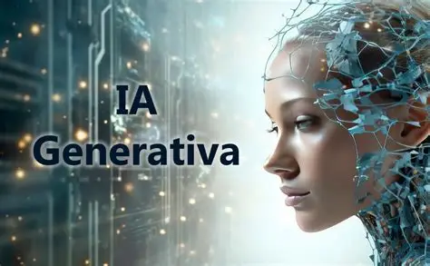
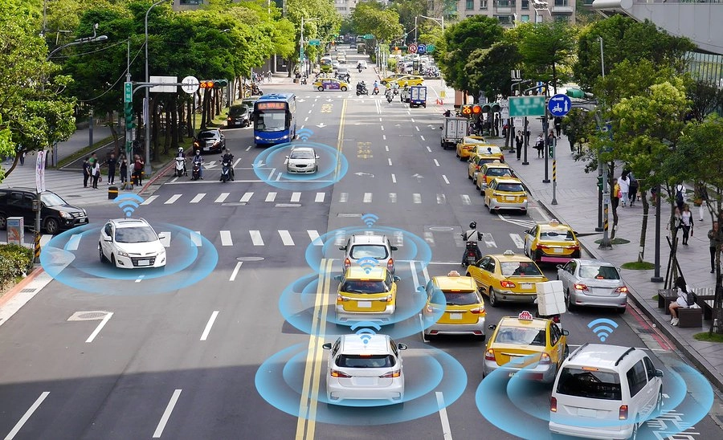

NOTICIAS Y AVANSES DE LA IA
Las noticias sobre inteligencia artificial están marcando la agenda global en temas de ciberseguridad, legislación y entretenimiento en este momento: Las noticias sobre inteligencia artificial están marcando la agenda global en temas de ciberseguridad, legislación y entretenimiento en este momento: Alerta informática por vulnerabilidad hallada con IA: Diversos modelos avanzados de inteligencia artificial (como GPT-5.6 Sol o Gemini 4 Argon) detectaron un fallo crítico de seguridad de "día cero" en el lenguaje de programación PHP, que sustenta gran parte de las páginas web del mundo. Ante el riesgo inminente de hackeos masivos facilitados por herramientas automatizadas, gobiernos de Europa (como el de Finlandia) desconectaron temporalmente sus portales oficiales como medida preventiva mientras se aplicaban los parches de emergencia

NUEVOS AVANCES EN IA GENERATIVA
La IA generativa ha evolucionado rápidamente gracias a modelos multimodales capaces de procesar texto, imagen, audio y video con gran precisión. Empresas de tecnología la integran en marketing, atención al cliente y automatización, logrando aumentos significativos de productividad. En educación, los tutores inteligentes personalizan el aprendizaje y mejoran el rendimiento de los estudiantes. La creatividad también se transforma con herramientas que generan imágenes, música y videos en cuestión de minutos. En salud, los sistemas generativos apoyan diagnósticos y reducen la carga administrativa de los profesionales. Las próximas tendencias apuntan a agentes autónomos más avanzados y una interacción humano‑máquina cada vez más natural.

LA IA EN LA MEDICINA
La integración de modelos generativos en hospitales permite crear resúmenes automáticos de consultas, redactar notas médicas y elaborar borradores de mensajes clínicos en cuestión de segundos. Estas herramientas ayudan a que los profesionales dediquen menos tiempo a tareas repetitivas y más a la atención directa, aumentando la eficiencia del sistema sanitario. Además, la IA mejora la comunicación con los pacientes al generar textos más claros y comprensibles, facilitando la toma de decisiones informadas. Aplicaciones especializadas, como asistentes entrenados en guías clínicas, permiten acceder rápidamente a recomendaciones basadas en evidencia y reducen la variabilidad en la práctica médica. Aunque estos avances requieren supervisión humana y fuertes medidas de privacidad, representan un paso decisivo hacia una medicina más ágil, precisa y centrada en el paciente.
MAS OPORTUNIDADES LABORALES
La inteligencia artificial impulsa cambios profundos en sectores como la salud, la educación, la ingeniería y los negocios. Surgen nuevos roles especializados en análisis de datos, desarrollo de modelos y gestión ética de tecnologías inteligentes. Las empresas buscan profesionales capaces de trabajar con herramientas de automatización y sistemas predictivos. La IA también facilita el emprendimiento mediante soluciones que optimizan procesos y reducen costos. Adaptarse y aprender habilidades digitales se vuelve clave para aprovechar estas oportunidades. En conjunto, la IA abre caminos laborales más diversos, dinámicos y orientados a la innovación.Modelos

AUTOS AUTONOMOS MAS SERCA
Los autos autónomos son vehículos capaces de desplazarse sin intervención humana directa. Utilizan sensores, cámaras y algoritmos avanzados para interpretar su entorno. Su objetivo es reducir accidentes y mejorar la movilidad en las ciudades. Cada año, las empresas tecnológicas perfeccionan sus sistemas de conducción automática. En algunos países ya circulan en pruebas controladas y rutas específicas. Su llegada masiva promete transformar la forma en que nos movemos y viajamos.